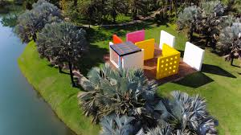

Inhotim, MG – O Encontro Perfeito entre Arte e Natureza
Localizado em Brumadinho, Minas Gerais, o Instituto Inhotim é um dos maiores museus a céu aberto do mundo e um dos destinos culturais mais impressionantes do Brasil. Unindo arte contemporânea e natureza exuberante, o espaço oferece uma experiência única, onde imensas galerias e instalações artísticas interagem harmoniosamente com jardins botânicos de tirar o fôlego. O local é um verdadeiro refúgio para quem busca inspiração, contemplação e contato com a arte em meio a paisagens deslumbrantes.
Com uma área de mais de 140 hectares abertos à visitação, Inhotim abriga um dos acervos de arte contemporânea mais importantes do país. São dezenas de galerias espalhadas pelo parque, com obras de renomados artistas nacionais e internacionais. Algumas das instalações mais icônicas incluem a "Galeria Adriana Varejão", que mescla arquitetura e arte de forma imersiva, e o "Pavilhão Cildo Meireles", onde o visitante experimenta sensações únicas por meio de cores, luzes e materiais inusitados.
Além das expressões artísticas, o Instituto Inhotim é também um dos mais belos jardins botânicos do Brasil. Seus extensos gramados, lagos e trilhas são lar de uma impressionante diversidade de plantas, incluindo espécies raras e exóticas. O paisagismo, assinado por Burle Marx e outros grandes nomes, complementa a experiência, tornando cada caminhada uma verdadeira jornada sensorial. Orquídeas, palmeiras centenárias e árvores nativas do bioma brasileiro criam um cenário harmonioso, onde arte e natureza se fundem perfeitamente.
Seja explorando suas galerias inovadoras, apreciando a tranquilidade dos jardins ou simplesmente contemplando as grandiosas paisagens ao redor, Inhotim proporciona uma experiência inesquecível para seus visitantes. Combinando cultura, criatividade e preservação ambiental, o instituto se destaca como um dos maiores tesouros de Minas Gerais e do Brasil.
